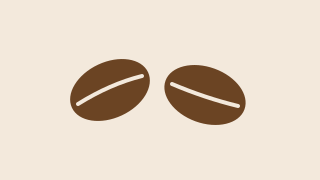

Harbor Coffee
Freshly roasted every morning

Open Monday to Saturday, 7:00 to 18:00. Closed on public holidays.
New this week: Ethiopia Guji
Menu highlights
- Cold brew
- Cinnamon bun
Flat white

Open Monday to Saturday, 7:00 to 18:00. Closed on public holidays.
New this week: Ethiopia Guji